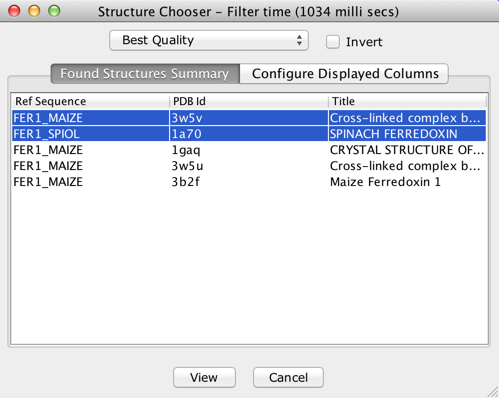

Structure Chooser
The Structure Chooser interface provides a smart technique for
selecting PDB structures to view in Jalview by querying readily
available meta-data of structures. The Interface can be invoked by
selecting the
"3D Structure Data.." option from a sequence's
pop-up menu. Some of the main
features it provides are listed below:
- Automatic discovery, retrieval and association of PDB
entries for an alignment's sequences
- Visualisation of discovered structures' meta-data
- Ability to configure the meta-data entries to visualise
- Auto-selection of the best structure via filtering by the
available metric parameters in the meta-data (i.e. resolution,
quality etc).
- Selection of multiple structures in a single operation
Additionally, the Structure Chooser retains the following contemporary
features of Jalview:
- Manual association of PDB entries via entering the PDB Id
or From File
- Ability to view cached PDB entries
Associating PDB files with Sequences
Discovery/Association of PDB entries to a sequence now
happens automatically during the initialisation of the Structure
Chooser Interface. Jalview uses the sequence's ID to query the PDB
Rest API provided by the EBI to discover PDB Ids associated with the
sequence.
Configuring displayed meta-data for Structures
To configure the visible meta-data displayed for the
discovered structures, click the 'Configure Displayed Columns' tab,
then tick the options which you intend to make visible.
Auto-selection of best Structures
Jalview can automatically filter and select the best
structures using various metric categories avaialble from the
meta-data of the structures. To perform this simply select any of the
following options from the drop-down menu in the Structure Chooser
interface: Best Uniprot coverage, Higest Resolution, Best Quality,
Highest Protein Chain etc. When the 'Invert' option is selected,
Jalview returns an inverse result for the current selected option in
the drop-down menu.

The screenshot above shows the Structure Chooser interface
along with the meta-data of auto-discovered structures for the
sample alignment. Note however that if no structures were
auto-discovered, a different interface for manual association will
be invoked as seen in the screenshot below.
Manual selection/association of PDB files with
Sequences
To manually associate PDB files with a sequence, select any of
the follwing options listed below from the drop-down menu in the
interface:
- From File - You can load a PDB file from
the local machine or network and associate it with the selected
sequence. PDB files associated in this way will also be saved in
the Jalview Archive file.
- Enter PDB Id - Jalview will use the PDB
Rest API, provided by the EBI, to fetch the PDB file with the
entered Id.
- Cached PDB Entries - You can view PDB
structures which have previously been downloaded/viewed using this
option. Jalview caches previously downloaded PDB entries in the
computer memory. However, if the project is saved before exiting
Jalview, Jalview will serialize the cached entries to the file
system.
The Structure Chooser interface was introduced in Jalview
2.9.